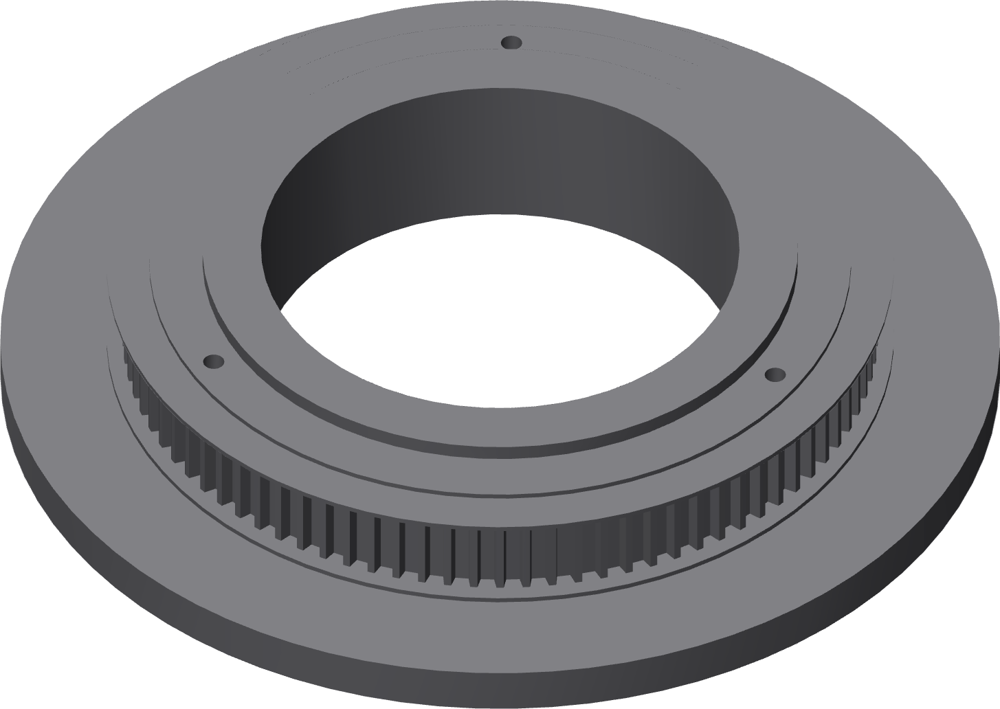

Print the turntable
The second long-loop plate. Flat underside on the bed, the 90-tooth pulley and the nest pedestal upward.

Settings
| Orientation | Flat underside on the bed |
| Walls | 6 |
| Infill | 30% gyroid |
| Support | Disabled |
Nothing on this part needs support. Turn it off rather than leaving it on automatic: a support that lands in a pulley groove or an insert pocket is worse than anything it would have held up.
Only after the coupon passes
This is the nine-hour print the coupon exists to protect. Do not start it until the delivered belt has seated across all twelve coupon grooves.
Also print now
| race-ring | Flat back on the bed, groove upward, 100% infill |
Deburr the ring groove with a plastic scraper only, for the same reason as the base.